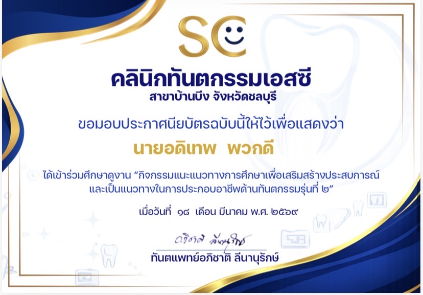
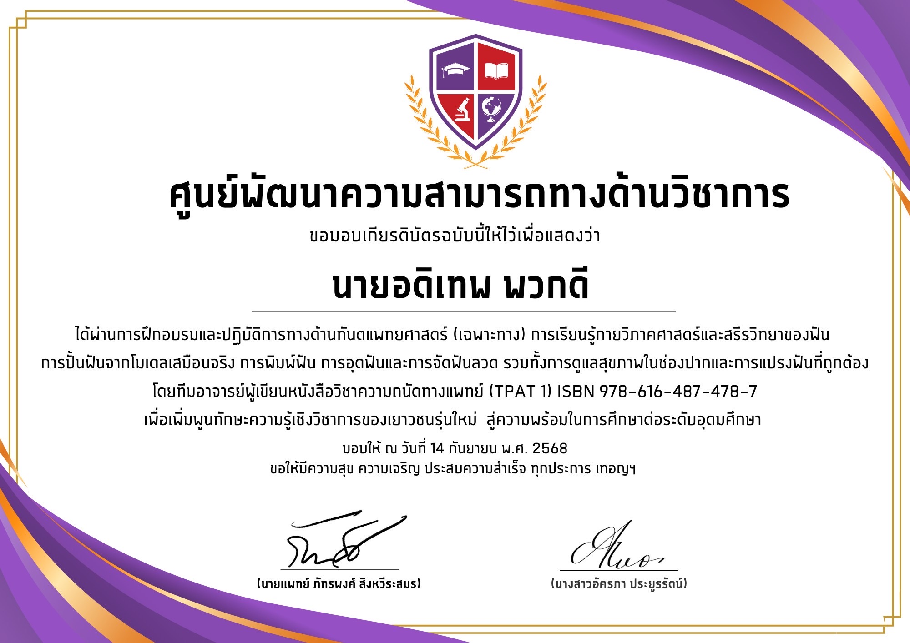
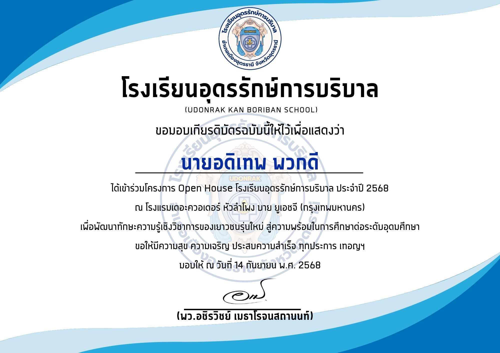
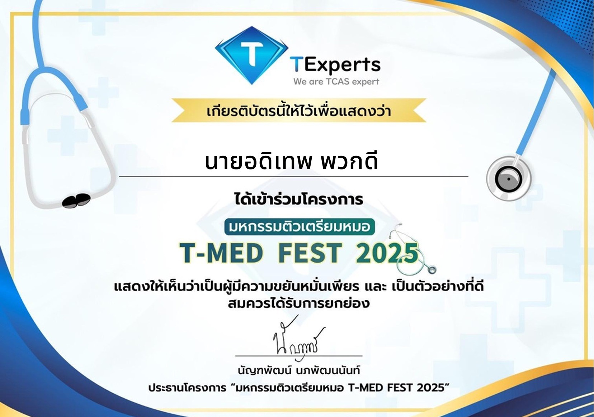
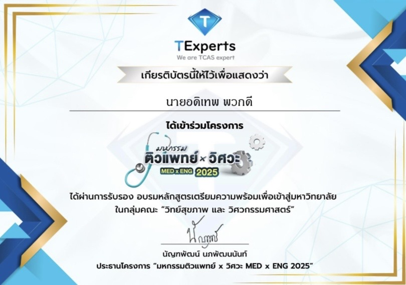
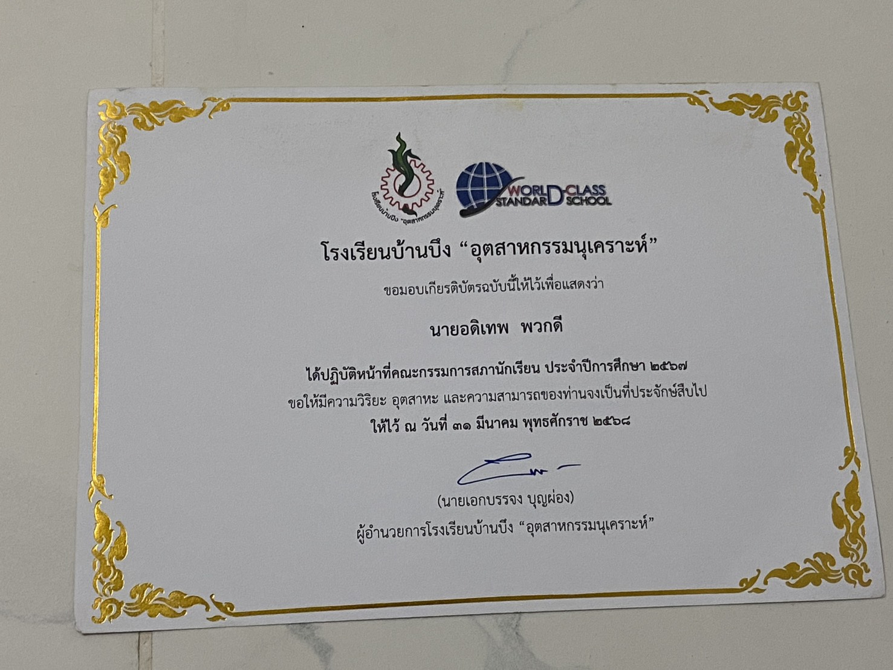
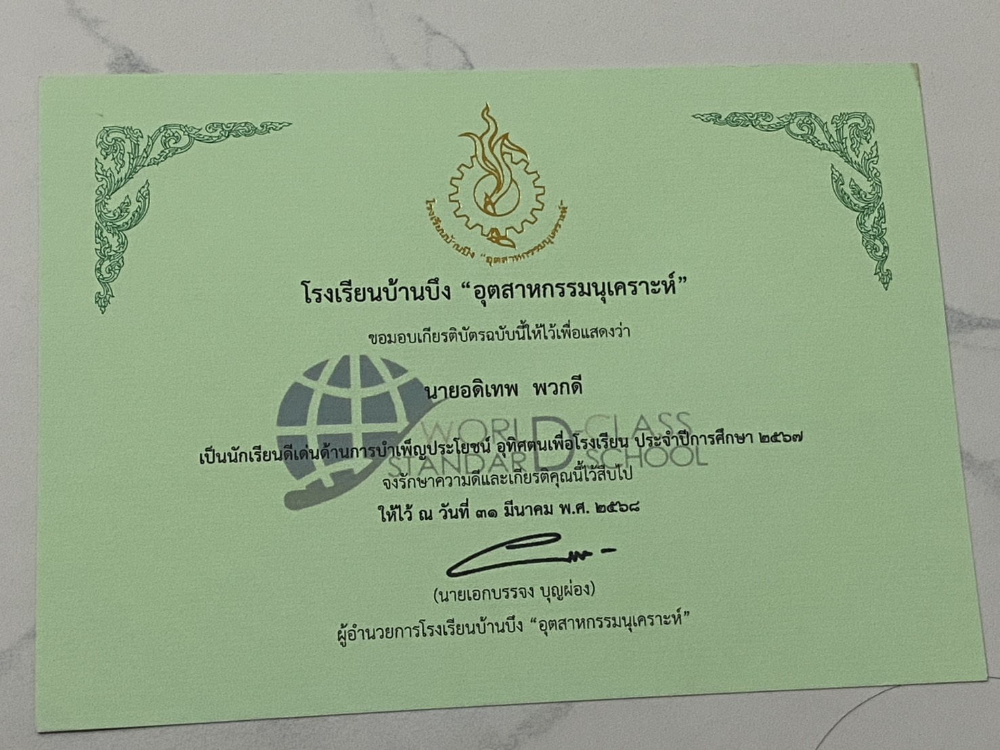

2569
ศึกษาดูงานคลินิกทันตกรรมเอสซี
เข้าร่วมศึกษาดูงาน "กิจกรรมแนะแนวทางการศึกษาเพื่อเสริมสร้างประสบการณ์
และเป็นแนวทางในการประกอบอาชีพด้านทันตกรรม รุ่นที่ 2" ณ คลินิกทันตกรรมเอสซี
สาขาบ้านบึง จังหวัดชลบุรี เมื่อวันที่ 18 มีนาคม 2569
กิจกรรม
ทันตกรรม

2568
อบรมเชิงปฏิบัติการทันตกรรมเฉพาะทาง (TPAT 1)
เข้าร่วมฝึกอบรมและปฏิบัติการด้านทันตแพทยศาสตร์เฉพาะทาง ณ ศูนย์พัฒนาความสามารถทางด้านวิชาการ
เรียนรู้กายวิภาคศาสตร์และสรีรวิทยาของฟัน ฝึกปั้นฟันจากโมเดลเสมือนจริง การพิมพ์ฟัน
การอุดฟัน และการจัดฟันลวด โดยทีมอาจารย์ผู้เขียนหนังสือวิชาความถนัดทางแพทย์ (TPAT 1)
เมื่อวันที่ 14 กันยายน 2568
กิจกรรม
ทันตกรรม

2568
เข้าร่วมโครงการ Open House โรงเรียนอุดรรักษ์การบริบาล
เข้าร่วมโครงการ Open House ของโรงเรียนอุดรรักษ์การบริบาล ประจำปี 2568
เพื่อเรียนรู้แนวทางการพัฒนาทักษะความรู้เชิงวิชาการของเยาวชนรุ่นใหม่
และเตรียมความพร้อมสู่การศึกษาต่อในระดับอุดมศึกษา เมื่อวันที่ 14 กันยายน 2568
กิจกรรม
แนะแนว

2568
โครงการติวเตรียมหมอ T-MED FEST 2025
เข้าร่วมโครงการมหกรรมติวเตรียมหมอ T-MED FEST 2025 จัดโดย TExperts
เพื่อเตรียมความพร้อมด้านวิชาการสำหรับการสอบเข้าศึกษาต่อในกลุ่มคณะวิทยาศาสตร์สุขภาพ
กิจกรรม
ติวเตรียมสอบ

2568
โครงการติวแพทย์ x วิศวะ MED x ENG 2025
ผ่านการรับรองการอบรมหลักสูตรเตรียมความพร้อมเพื่อเข้าสู่มหาวิทยาลัย
ในกลุ่มคณะวิทยาศาสตร์สุขภาพและวิศวกรรมศาสตร์ จัดโดย TExperts
กิจกรรม
ติวเตรียมสอบ

2567
คณะกรรมการสภานักเรียน ประจำปีการศึกษา 2567
ปฏิบัติหน้าที่คณะกรรมการสภานักเรียน โรงเรียนบ้านบึง "อุตสาหกรรมนุเคราะห์"
ประจำปีการศึกษา 2567 ฝึกฝนทักษะความรับผิดชอบ ภาวะผู้นำ
และการทำงานร่วมกับผู้อื่นเพื่อส่วนรวมของโรงเรียน
กิจกรรม
สภานักเรียน

2567
เกียรติบัตรนักเรียนดีเด่นด้านการบำเพ็ญประโยชน์
ได้รับเกียรติบัตรจากโรงเรียนบ้านบึง "อุตสาหกรรมนุเคราะห์" ในฐานะนักเรียนดีเด่น
ด้านการบำเพ็ญประโยชน์และอุทิศตนเพื่อโรงเรียน ประจำปีการศึกษา 2567
จิตอาสา
ระดับโรงเรียน
